把選單上的數字，變成看得見的電波
用一台 RTL-SDR，把頻率、功率、天線、頻寬、步進、亞音、offset、靜噪一個一個「指」給你看。這是第一節課程的完整網頁版。
頻譜 Spectrum & 瀑布圖 Waterfall
先學會讀這張圖——它是後面每一段共用的工具。
1·1一張圖，兩層資訊
SDR 的畫面上下兩塊，其實是同一份資料的兩種畫法：上圖看「此刻」，下圖看「歷史」。
- 橫軸 ＝ 頻率（上下兩圖共用）：訊號在左右哪裡，就是頻率多少。
- 上圖 · Y 軸 ＝ 即時強度：此刻每個頻率有多強（dBFS，相對值）。
- 下圖 · 往下 ＝ 時間流動：新的在上、舊的往下捲，看得到歷史。
- 下圖 · 亮度 ＝ 強度：把上圖的「高度」換成「顏色深淺」，越亮越強。
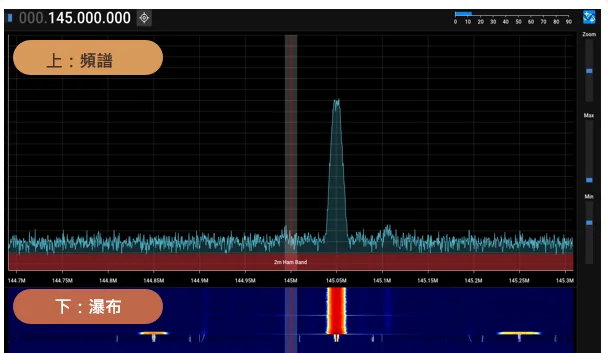
1·2瀑布圖上會遇到的五個詞
- 1載波 Carrier
被調變的那根基礎電波；沒說話時就是圖上乾淨的一根線。
- 2底噪 Noise Floor
沒有訊號時的背景雜訊；一切強度都跟它比高低。
- 3頻寬 Bandwidth
一個訊號左右攤開的寬度，決定它佔多少頻譜。
- 4頻段 Band
一段頻率的用途分區；圖上紅色標的「2m 業餘段」就是一個。
- 5DC 尖峰 DC Spike
接收機自己在正中央產生的假訊號，PTT 放開也不會消失。
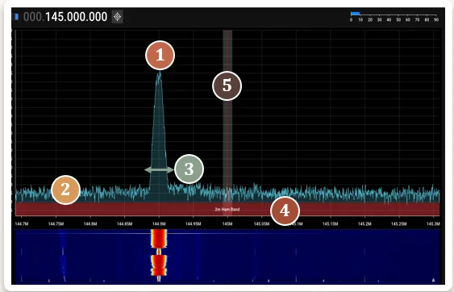
1·3先有標準答案：理想的頻譜長什麼樣
沒說話、沒資料——就是一根線。
純音調變（測試音、亞音）長出可數的邊帶。
真人講話＝很多頻率混在一起，邊帶糊成一片。
資料把整段頻寬填滿，像一堵牆。
1·4沒看過的訊號，怎麼判斷真假？
不用看過，用常識推理三個問題：
- 它有理由待在這裡嗎？真訊號有來源與用途，會落在已知頻段；頻譜的無人地帶突然冒出東西，可疑。
- 形狀配得上用途嗎？語音要一定寬度、資料更寬、信標很窄——寬度不合理就存疑。
- 行為像真的嗎？會來會走＝有人通話；規律週期＝機器；一整排完美等距＝多半是你自己過載。
還是不確定？動手戳它一下：
按 PTT
- 跟著你亮滅的 ＝ 真
- 不理你的 ＝ 假
移中心頻率
- 真訊號不動
- 鏡像／DC 假訊號跟著中心跑
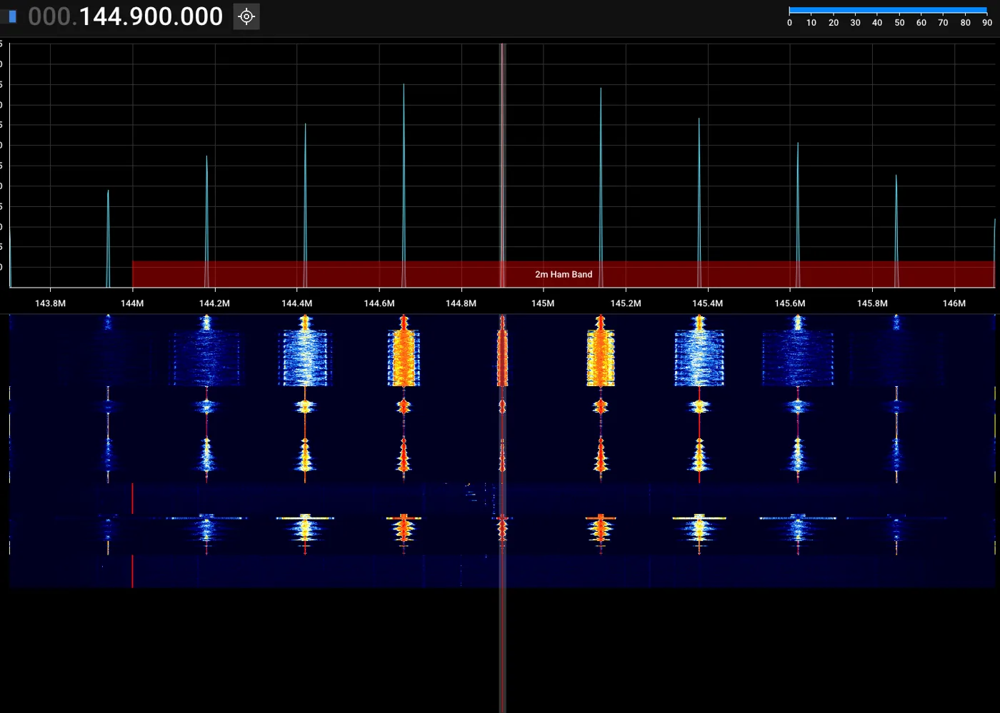
頻率 Frequency
大家最常碰到的參數——它在哪，以及它怎麼傳播。
2·1為什麼要對頻率？
2·2頻率 ＝ 水平位置
轉一個頻道，那根線就往右跳一格 →
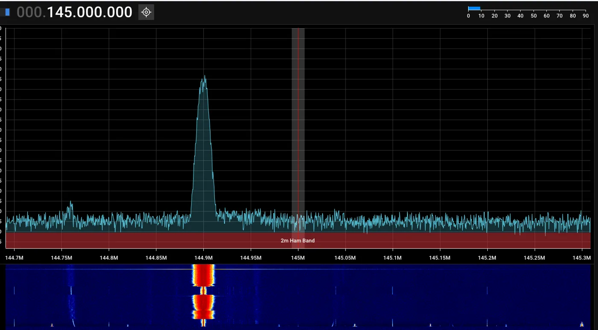
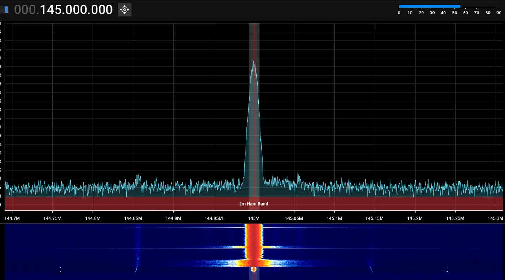
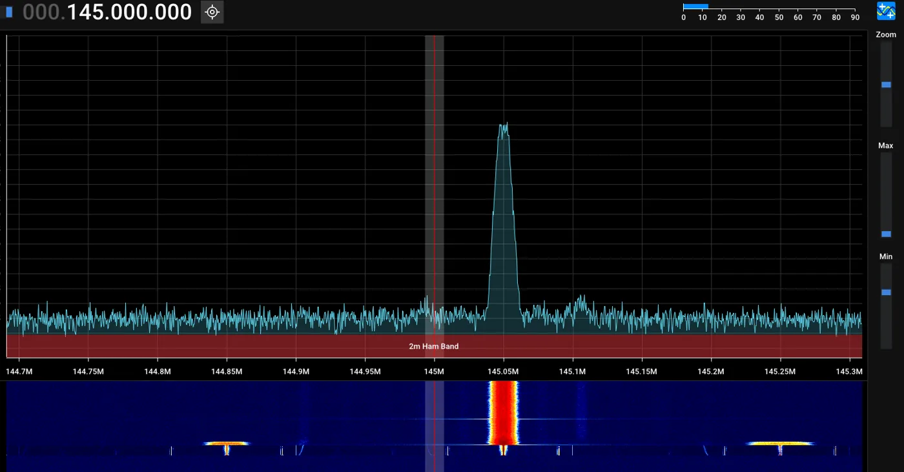
2·3VHF 與 UHF：住在頻譜的哪裡
VHF 30 – 300 MHz
- ← 頻率低 · 波長長
- 2m 業餘段 144 – 148 MHz
- 145 MHz → λ ≈ 2.07 m（「2 米」段）
UHF 300 MHz – 3 GHz
- 頻率高 · 波長短 →
- 70cm 業餘段 430 – 440 MHz
- 435 MHz → λ ≈ 0.69 m（「70 公分」段）
2·4波長長短，各有各的場子（理論上）
VHF · 2m 波長長（約 2 公尺）
- 繞射強 能繞過山丘、地形起伏
- 開闊佔優 郊區、野外傳得更遠
- 天線較長 但增益容易做出來
- 適合 山區、野外、長距離
UHF · 70cm 波長短（約 0.7 公尺）
- 直線性強 靠反射鑽進建築、走廊
- 穿透雜亂 市區、室內、大樓密集佔優
- 天線較短 頻寬也較充裕
- 適合 都市、室內、複雜地形
2·5但理論歸理論：電波在真實環境會被折騰
多路徑 Multipath
- 同一訊號走不同路徑到達，彼此相加相消 → 忽強忽弱
反射 Reflection
- 牆面、金屬、水面把電波彈開，產生第二條路徑
折射 Refraction
- 大氣與對流層讓路徑彎曲，訊號方向偏掉
散射 Scattering
- 雨、樹葉、粗糙表面把能量打散到四面八方
繞射 Diffraction
- 從山稜、建築邊緣繞過去，障礙後也收得到一點
吸收 / 遮蔽 Absorption
- 牆體、人體、雨水吸掉能量，大障礙後形成陰影
2·6近代想辦法克服——但 FM 是類比
近代數位通訊怎麼對付不穩定
- 數位調變 + 錯誤更正 (FEC) 收到有錯，靠冗餘碼自己補回來
- 展頻 / OFDM 把資料攤到多個載波，避開被打爛的頻段
- 分集 / MIMO 多支天線同時收，挑最好的那條路
- 自適應編碼 + 重傳 通道差就降速、要求重送
業餘 FM 手持機 ＝ 類比，沒有這些
- 簡單、堅固、低延遲的即時語音
- 不需要基地台或網路就能通
- 跨廠牌互通，靠人與紀律運作
- 當基礎設施倒下，它還會動 ← 民防／災害的最後手段
抗噪靠 FM 捕獲效應，不靠演算法——訊號差就是差。所以前面每個參數都得調對。
發射功率 TX Power
H / M / L —— 功率大，只是線更亮。
3·1為什麼要有 H / M / L？
3·2功率 ＝ 高度 / 亮度（寬度不變）
功率大 ＝ 訊號更高、更亮，但左右寬度完全不變。通不通，還要看對方收不收得到——加功率不保證通。
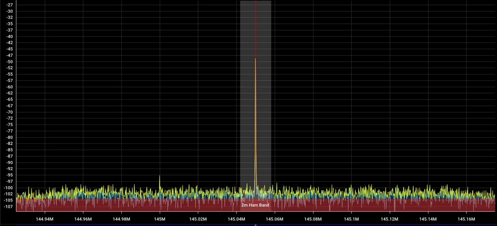
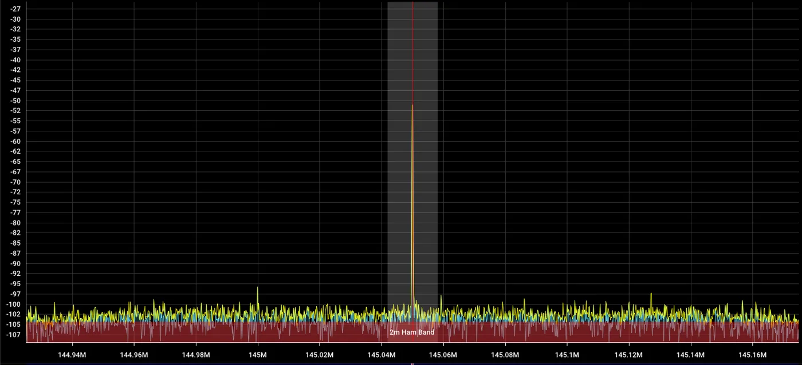
天線 Antenna
增益 ＝ 把功率集中打出去；頻率、接頭要對得上。
4·1天線增益實測：換一支天線，載波差約 13 dB
同條件替換法：只換發射端天線、其他不動，讀 FFT 峰值相減。
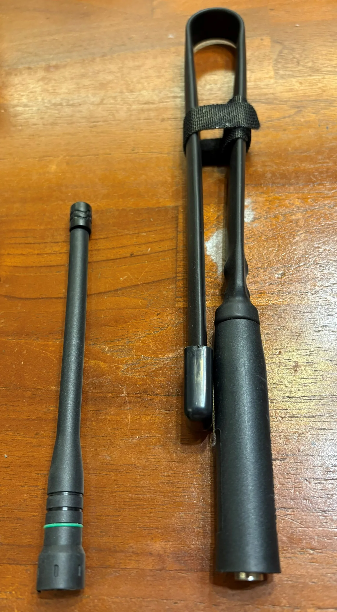
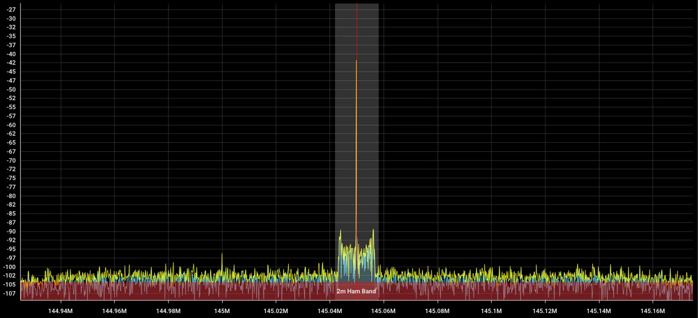
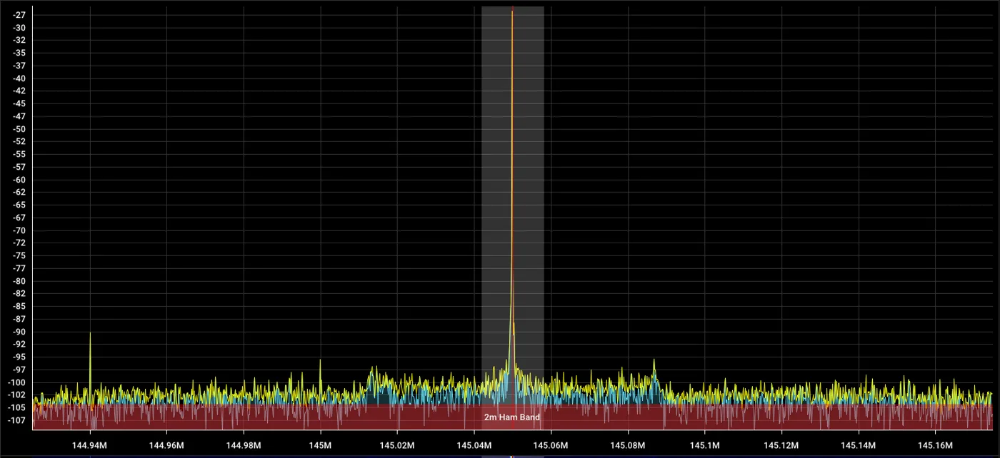
4·2挑天線看三件事：頻率、增益、接頭
① 頻率
- 天線有設計頻段（例：FM 136–174 / 400–480MHz ＝ V/U 雙頻）。
- 用在對的頻段才有效率；不對會 SWR 高、功率被反射回機身。
② 增益 gain
- 常見 dBi / dBd（dBd ＝ dBi − 2.15）。
- 越高打越遠，但波束越扁、仰角越窄。手持／移動未必越高越好。
③ 接頭規格
- 常見 SMA-公 / SMA-母 / BNC…。
- 母機與天線的公母、螺紋要對得上；接錯裝不上或接觸不良、功率漏失。
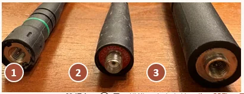
寬頻 / 窄頻 W / N
面板寫「頻寬」，其實它設的是「訊號最多能佔多寬」的上限。
5·1為什麼要有寬 / 窄頻？
5·2寬 / 窄頻 ＝ 訊號寬度的天花板
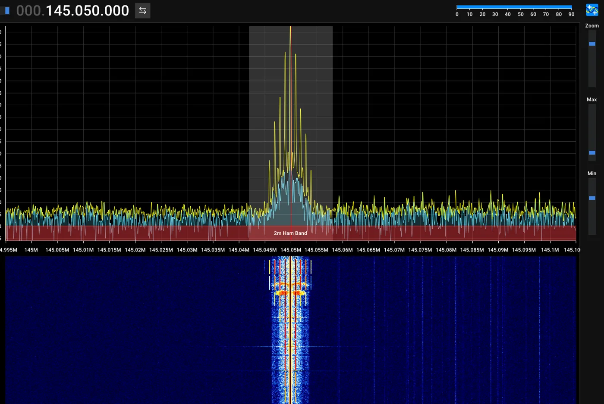
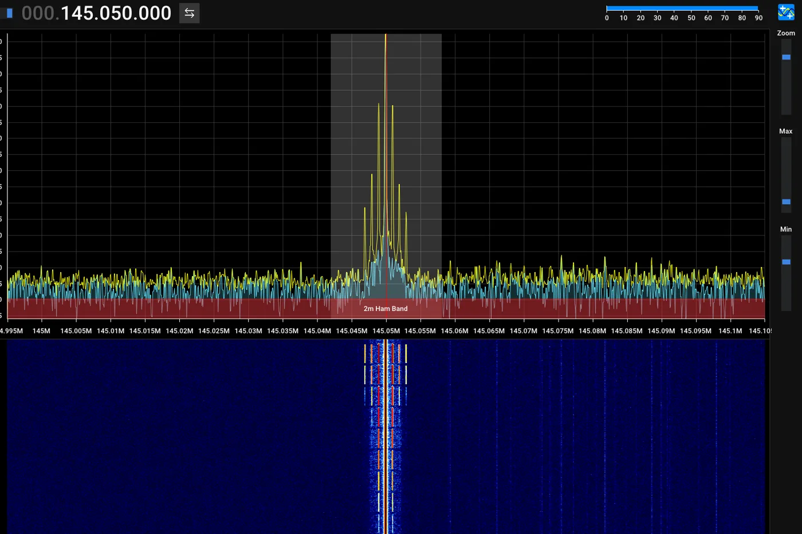
頻道步進 Step
從「轉頻率的最小單位」，到「沒協調好就壓到隔壁」。
6·1為什麼要有頻道步進？
6·2步進：轉頻率的最小跳動單位
步進 (STEP) ＝ 你每按一下、轉一格，頻率跳動的最小量。常見 5 / 6.25 / 12.5 / 25 kHz。整個頻段被它切成一格一格。
✗ 步進 25 kHz
- 停得到：145.000 / .025 / .050 / .075 / .100
- 停不到 145.0125（被跳過）
✓ 步進 12.5 kHz
- 停得到：…145.000 / .0125 / .025 / .0375 / .050…
- 145.0125 剛好落在格線上
6·3步進沒協調 → 鄰頻重疊；為什麼留「保護頻帶」
真實訊號會超出「理論／佔用頻寬」——邊緣的「裙擺」向外溢。保護頻帶 ＝ 頻道間隔 − 佔用頻寬，就是留給裙擺的緩衝，算出負數＝必定重疊。
| 設定 | 頻道間隔 | 保護頻帶 | 結果 |
|---|---|---|---|
| 寬頻 16k | 25 kHz | +9 kHz | 安全 |
| 寬頻 16k | 12.5 kHz | −3.5 kHz | 重疊 |
| 窄頻 11k | 12.5 kHz | +1.5 kHz | 勉強 |
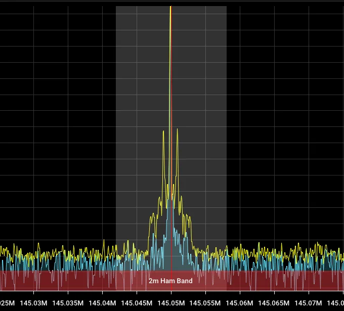
裙擺
- 真實訊號會超出理論頻寬——邊緣還有能量。
漂移
- 發射頻率會隨溫度、晶體誤差飄，不會永遠停在正中央。
濾波器
- 接收濾波器不是磚牆，邊緣慢慢滾降，鄰頻會漏一點進來。
調出這個形狀
一對無線電、兩種設定，在頻譜上疊出「一寬一窄」——這就是你這組要做出來的畫面。
分組六組各據一個頻段
每組拿到一段夠寬的頻段，兩台就在裡面錯開頻率。全部落在 2m 頻段內、避開呼叫與衛星頻率。
| 組別 | 頻段（MHz） | 寬度 |
|---|---|---|
| 第 1 組 | 144.700 – 144.800 | 100 kHz |
| 第 2 組 | 144.840 – 144.940 | 100 kHz |
| 第 3 組 | 144.980 – 145.080 | 100 kHz |
| 第 4 組 | 145.120 – 145.220 | 100 kHz |
| 第 5 組 | 145.260 – 145.360 | 100 kHz |
| 第 6 組 | 145.400 – 145.480 | 100 kHz |
題目兩台一起發，疊出一寬一窄
做法
- A 台 寬頻 (W) ＋ 低功率 (L)
- B 台 窄頻 (N) ＋ 高功率 (H)
- 錯開 兩台頻率在你們的頻段內稍微分開
- 疊圖 開 SDR 的 FFT Hold，兩台輪流發
想一想
- 哪個佔的頻寬大？哪個比較高（訊號強）？
- 兩台靠太近會怎樣？
- 高度看功率、寬度看 W/N，兩件事互不相干——這正是判斷「同一個頻段裡有幾台、各是什麼設定」的基本功。
亞音 CTCSS
重點：亞音不是加密。
7·1為什麼要有亞音（CTCSS）？
7·2亞音在瀑布圖上：一排梳齒
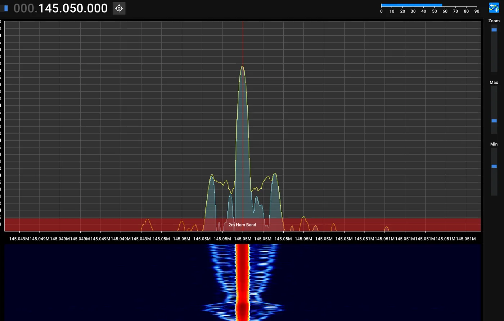
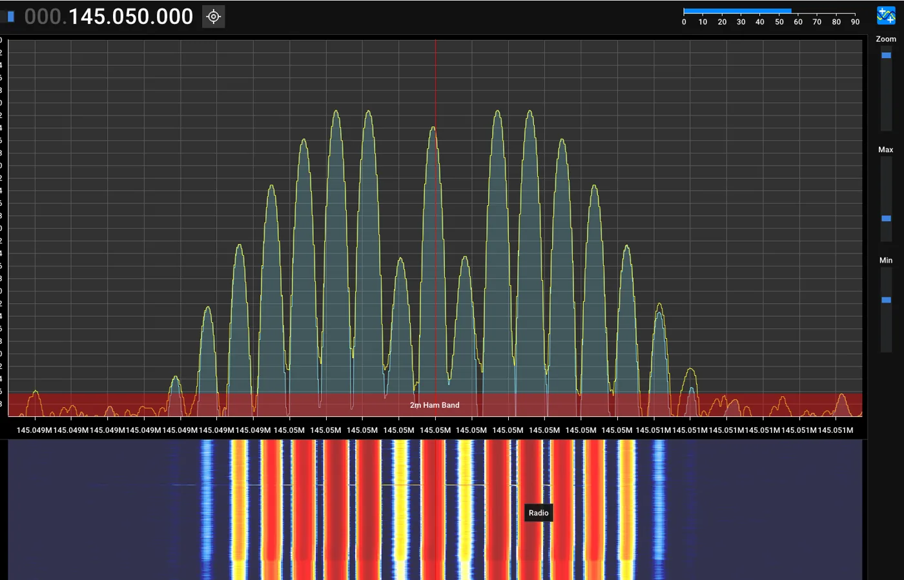
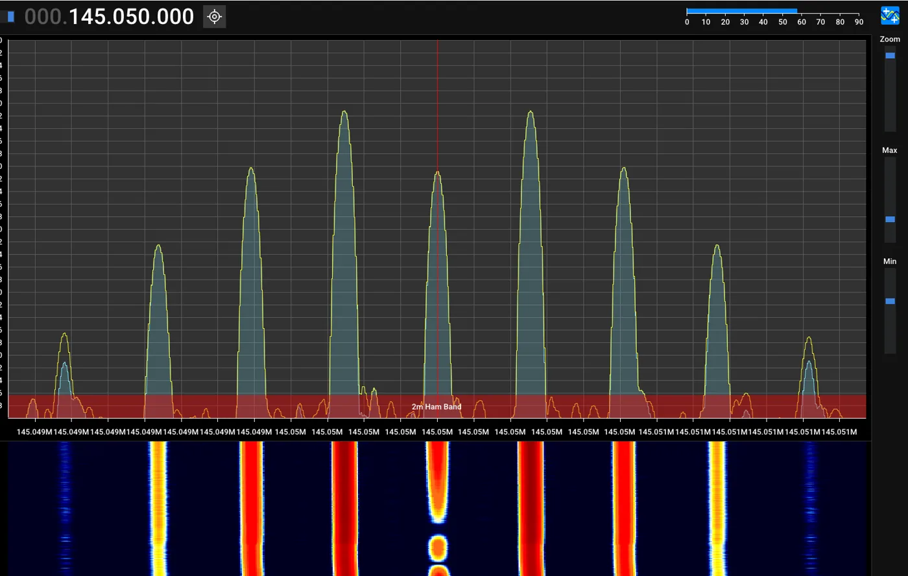
7·3亞音不是加密——它只關你的喇叭
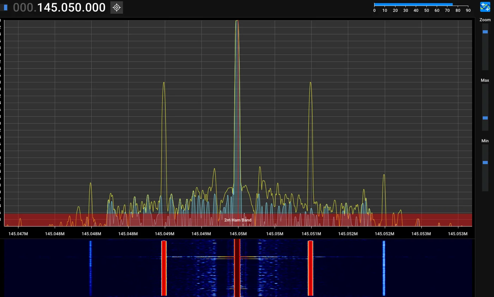
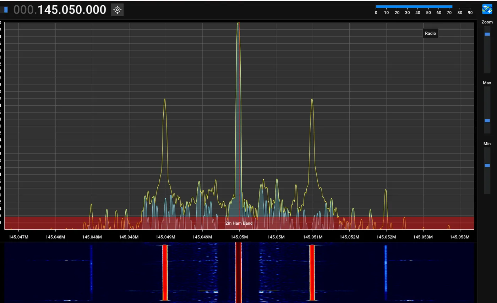
同一個電波（總功率差 0.58 dB、頻寬差 10 Hz），B 卻一個聽得到、一個聽不到。而且 B 不出聲時 BUSY 燈仍亮著——它自己承認收到了，只是不放給你聽。
動手做設傳 / 收亞音，體驗通聯差異
兩台 A / B 對到同一頻率。分開設「發射碼 T-CTCS」與「接收碼 R-CTCS」，走四種組合，觀察通不通。收碼＝收聽要不要「驗」亞音；傳碼＝發射要不要「帶」亞音。
| 測試 | A 台 | B 台 | 結果（現場填） |
|---|---|---|---|
| 1 | 設 T-CTCS 88.5、不設 R | 設 T-CTCS 88.5、不設 R | 只發射帶碼、收聽不驗 → |
| 2 | 不設 T、設 R-CTCS 88.5 | 不設 T、設 R-CTCS 88.5 | 只收聽驗碼、發射不帶 → |
| 3 | 設 T ＋ R 88.5 | 設 T ＋ R 88.5 | 都設同碼 → |
| 4 | 設 T ＋ R 88.5 | 設 T ＋ R 100 | 碼不同 → |
Offset 收發分裂
重點：中繼台一收一發不同頻。offset 決定「發射」跳去哪——方向(＋/−)＋大小；還要配亞音才進得了中繼台。
8·1為什麼要 offset？中繼台一收一發
8·2offset 實測：TX 平移、RX 不動
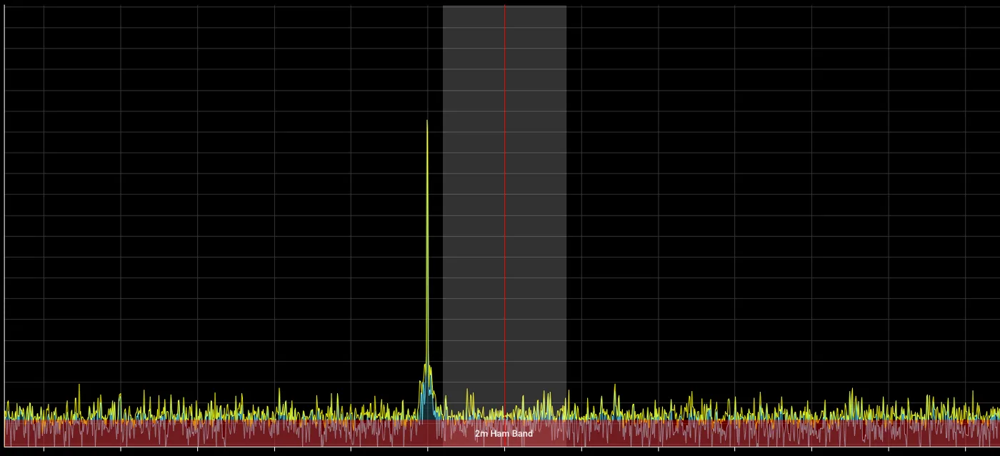
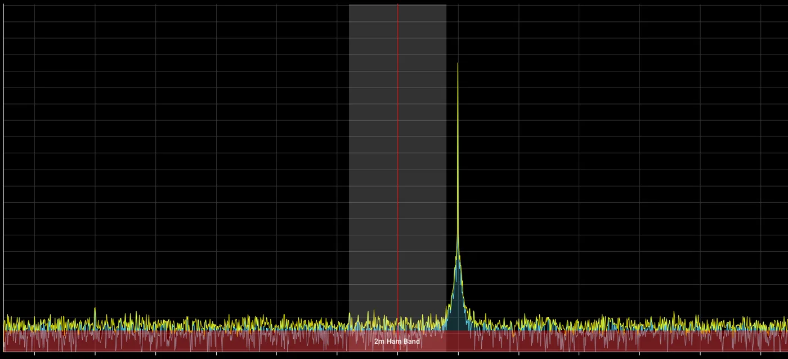
RX
- 顯示／收聽 145.050 ＝中繼台輸出（不動）
TX
- 145.050 ± offset ＝中繼台輸入（按 PTT 才平移）
架一座 2m 中繼台
中繼台「同時收、同時發」（全雙工）。先想清楚：最少要設定什麼才能通話？
中繼台在做什麼？
- 兩台手持機互相聽不到（太遠、被山擋）就不能直通。
- 中繼台架在高處，同時「收」、再用另一個頻率「發」，替大家轉發——把每個人的涵蓋範圍放大到中繼台看得到的地方。
什麼時候用？
- 手持直通常只有幾公里、怕地形遮蔽。山區搜救、跨市聯絡、災難現場，靠一座山頂中繼台就能把分散的小隊連起來。
- 注意：它一倒，靠它的人全斷——要留直通備援。
參考答案一座 2m 中繼台這樣設
| 參數 | 參考答案（範例） | 為什麼這樣設 |
|---|---|---|
| 能通話的最低必要 | ||
| 輸出頻率（你收） | 145.600 MHz | 這是公布出去的中繼台頻率——大家把它設進「接收」。 |
| 輸入頻率（你發） | 145.000 MHz | ＝輸出 − 位移；中繼台就在這個頻率「聽」你發話。 |
| 位移（方向＋大小） | −600 kHz（向下） | 2m 標準位移 600 kHz。要夠大——中繼台同時收發，太近會「自己蓋掉自己」、保護頻帶也不足（S6）。 |
| 讓它好用、不互擾 | ||
| 亞音（存取） | 開，88.5 Hz | 擋雜訊與鄰台誤觸、避免亂開台；但它不加密，話仍是明語（S7）。 |
| 發射功率＋架高 | 大功率、架高處 | 中繼台要覆蓋廣，所以架高、功率大（S3）；但干擾半徑同時放大，要協調。 |
| 與鄰台協調 | 頻率／亞音錯開 | 鄰台的輸入／輸出若太近，就是放大版的鄰頻重疊（S6）。 |
靜噪 Squelch
9·1為什麼要有靜噪？
9·2靜噪：在「底噪」之上，畫一條門檻線
底噪＝背景雜訊的高度；靜噪 SQL＝你在底噪之上畫的一條門檻線。訊號高過線→喇叭開；低於線（含底噪）→喇叭關。
動手做調 SQL 找門檻（用低功率）
各組甲聽、乙發（同頻率）。把 SQL 從 0 慢慢往上轉，看喇叭：一直響 → 只在乙發時響 → 連乙發都不響。弱訊號用低功率 (L)做。
| 測試 | 甲的 SQL | 乙發射 | 甲喇叭 | 體驗／學到 |
|---|---|---|---|---|
| ① | SQL 0（全開） | 沒人發 | 一直沙沙 | 太低＝整天雜音 |
| ② | 調到雜音剛消失 | 沒人發 | 安靜 | 這個值＝「門檻」（設在底噪之上） |
| ③ | 維持門檻 | 乙近距·正常發 | 出聲、清楚 | 設對：安靜又收得到 |
| ④ | SQL 轉到最高 | 乙轉低功率 L 發 | 聽不到（漏接） | 太高＝有人也漏接；SDR／BUSY 仍看得到 |
出問題，怎麼查？
用學過的每一層，從最便宜、最常見的先查起。
心法先聽、分層、一次一項
① 先聽、先看表
- 靜噪 SQL 設 0，聽有沒有訊號或雜音，先分辨「真沒訊號」還是「設定問題」。
② 分層照成本查
- 設定（免費最常見）→ 實體（天線接頭＞高度視距＞功率）→ 系統（中繼位移／亞音、可達性、單點失效）。
③ 一次一項＋找人對測
- 改一個參數就測一次；請隊友用另一台幫你聽，才分得出是「發不出」還是「收不到」。
收訊聽不到、聽不清：症狀 → 怎麼查 → 怎麼解
| 症狀 | 可能原因 | 怎麼查 | 怎麼解 |
|---|---|---|---|
| 完全沒聲音 | 沒對到頻率／靜噪太高／要亞音沒對 | 設 SQL=0 監聽有無雜音；核對頻率與步進 | 對頻＋對步進；降靜噪；關或對正亞音 |
| 轉不到想要的頻率 | 步進設太大 | 試著轉到 145.0125 | 改小步進 |
| 聲音破、尖 | 對方寬頻、你窄頻 | 問對方是 W 還是 N | 統一寬窄頻 |
| 聲音悶、小聲 | 對方窄頻、你寬頻 | 同上 | 統一寬窄頻 |
| 一直有雜音 | 訊號弱／靜噪太低 | 看 S 表格數低不低 | 靠近／架高／換天線；調高靜噪 |
發射·系統發不出去、中繼與覆蓋
| 症狀 | 可能原因 | 怎麼查 | 怎麼解 |
|---|---|---|---|
| 別人都收不到我 | 天線沒鎖／接錯、功率太低 | 檢查接頭公母、鎖緊；請隊友聽你發射 | 鎖緊／換對接頭；架高；適度功率 |
| 直通不通、走中繼才通 | 兩台互相聽不到（可達性） | 隊友直呼看得到彼此嗎；是否被地形擋 | 靠近／架高／走中繼台 |
| 開不了中繼台 | 入口亞音錯、位移方向或大小錯 | 對照中繼台的參數 | 設對入口亞音與位移 |
| 中繼台一倒全斷 | 星狀單點失效 | — | 預留直通備援頻率、分散節點 |
| 覆蓋不到遠隊 | 距離／地形超出 | 看地形與視距 | 高增益天線＋架高（天線＞功率）；中繼延伸 |
災難現場通訊計畫
用今天學到的每一個參數，替你的小隊做決定。
情境一場地震後的現場通聯
強震後市電中斷。你是新竹市現場指揮所民防通訊官，要替下列單位設計一份「能立即部署」的通訊計畫：指揮所（市區高點）、搜救隊×3（分散山區與倒塌區，相距數公里、地形遮蔽）、後送隊×2（往醫院），每隊僅能聽到自己隊員的通訊。可用器材：每人一台 2m/70cm 手持機（0.5–5 W）、少量高增益天線、可選配 Meshtastic 節點；電力僅電池與少量太陽能；市內有一座 2m 中繼台可用（145.700 MHz，−0.6 MHz）。部分傷患名單需保密。指定主用頻段：2m 業餘頻段（需執照）。
要決定你要決定的七件事
1 · 頻率與步進
- 各隊用哪些頻率？步進統一才不會互相壓到（S6）
2 · 寬 / 窄頻
- 全體統一 W 還是 N？跨隊會不會不相容（S5）
3 · 功率
- 哪些用 H、哪些用 L？覆蓋 vs 耗電（S3）
4 · 亞音與紀律
- 要不要用亞音分隊？哪些話不能明語（S7）
5 · 天線與架設
- 要不要高增益、架高？機動隊選型（S4）
6 · 中繼台
- 要不要架？輸入／輸出／位移／亞音（想一想）
7 · 資料鏈路與韌性
- 語音／位置(Meshtastic)／態勢圖(TAK)；星狀還是網狀備援、單點失效（第二節）
限制
- 保密：業餘禁加密、免執照供應鏈存疑
- 電力：停電，算功耗與太陽能
參考答案新竹地震通訊計畫這樣配
| 條件 | 參考答案（範例） | 為什麼 |
|---|---|---|
| 頻率與步進 | 各隊分配不同頻率、步進統一 12.5k；跨隊經中繼台一進一出 | 頻率錯開不互壓、步進統一避免鄰頻重疊（S6） |
| 寬 / 窄頻 | 全體窄頻 N | 頻道多、可容納更多隊，語音夠用（S5） |
| 功率 | 指揮所／中繼台 H；隊員平時 L | 覆蓋 vs 省電；功率非萬靈丹（S3） |
| 亞音 | 各隊不同入口亞音分隊；傷患個資不上明語 | 擋誤觸、分群（S7）；業餘頻段禁加密 |
| 天線與架設 | 指揮所／中繼台高增益且架高；隊員原廠短天線 | 天線效益 > 加功率（S4） |
| 中繼台 | 架一座 2m 中繼台：145.700／−0.6／設入口亞音 | 手持直通蓋不住山區，中繼台延伸覆蓋（想一想） |
| 資料鏈路與韌性 | 位置用 Meshtastic(太陽能)；TAK 走 802.11；中繼台倒了退回直通 | 語音＋資料分工、避免單點失效（第二節） |